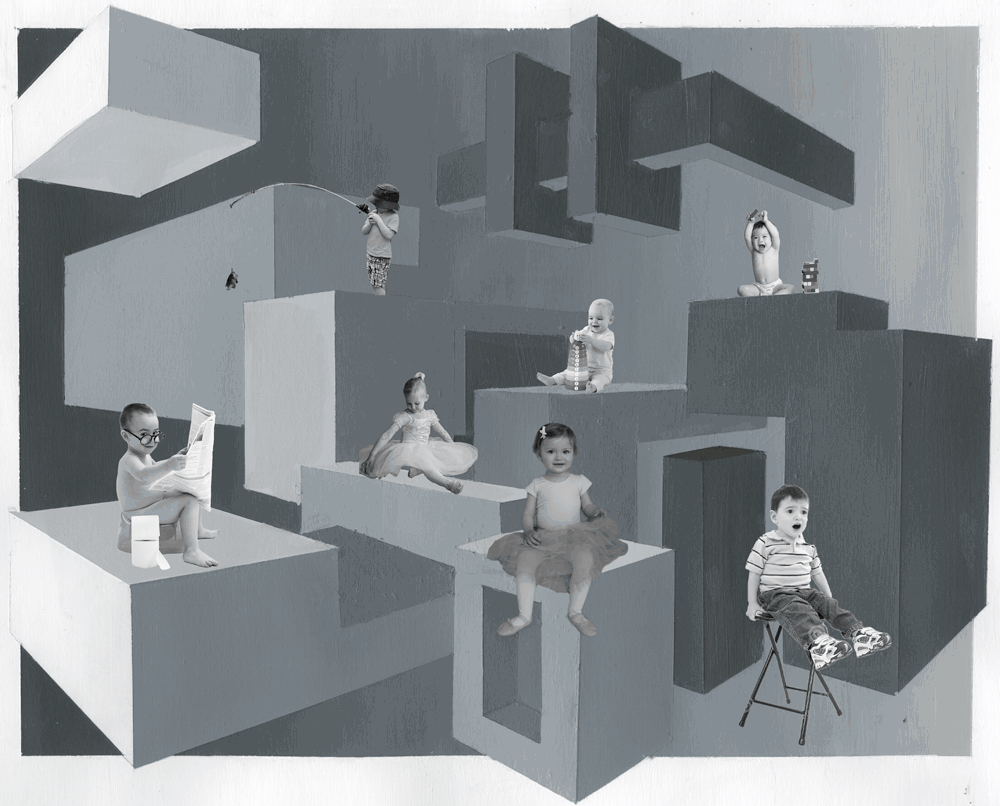

This microinteraction will be for my portfolio website, MG Design
The current art page is displayed in this image grid
There is one microinteraction incorporated into this page: a change in opacity on hover
The microinteraction I will be adding will function similarly to the example

The microinteraction will be triggered by hovering over any of the images in the grid
The image blur will radiate into the center in the shape of the image
The image title will be displayed over the blur
After hover, the title will disappear and the image blur will radiate out from the center
The user will see the image they are hovering over blur and the title of the image display
There are no loops in this microinteraction
This microaction will utilize a mode to blur the image and display the text that appears over the image upon hover